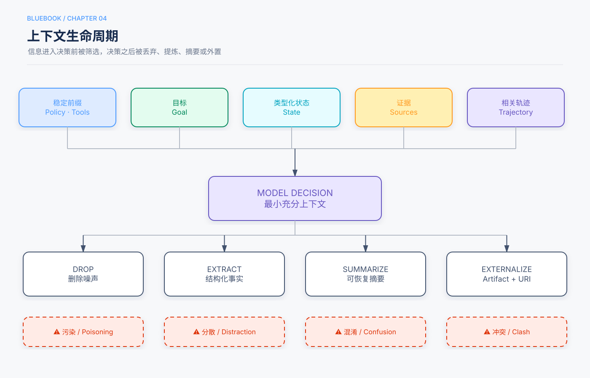

CHAPTER 04 / CORE ARCHITECTURE
上下文工程：为每一次决策准备正确的信息
上下文不是模型能容纳的全部内容，而是当前决策真正需要、允许看见且能够验证的信息集合。
5分钟速读
稳定前缀承载规则和工具；动态尾部承载目标、状态和证据。更长不等于更好，外部内容也不能通过进入上下文获得权限。
一、上下文的边界
Context是模型在当前决策点能够看到的信息。它不是Memory的同义词，也不是整个数据库的复制品。运行状态、检索证据、工具结果和相关轨迹会在这一刻被组装，但它们各自仍有独立来源和生命周期。
一个可靠系统首先区分三件事：什么信息应该被模型看见，什么信息只应由确定性代码使用，以及哪些大型载荷应留在Artifact Store中。
decision_context = {
"goal": run.objective,
"state": typed_state,
"evidence": authorized_sources,
"trajectory": relevant_events,
"budget": remaining_budget
}二、稳定前缀与动态轨迹

图4 信息经过筛选进入决策，并在决策后被删除、提炼、摘要或外置。
稳定前缀包含变化频率较低的系统规则、工具契约和输出Schema。动态轨迹只保留与当前判断有关的目标、状态、观察和失败。
实验边界
实验1-1不支持“每个上下文组件都不可或缺”。移除保留的Reasoning历史仍可完成任务；工具结果缺失则更容易出现盲目重复或无依据回答。
三、四类上下文故障
Poisoning：来源污染
网页、邮件、文档和其他Agent消息都是不可信输入。它们可以改变模型知道什么，但不能改变系统允许模型做什么。
Distraction：无关信息
信息相关性随决策点变化。过去有用的观察如果继续留在轨迹中，会消耗预算并干扰工具选择。